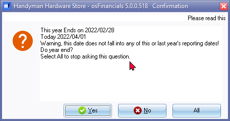
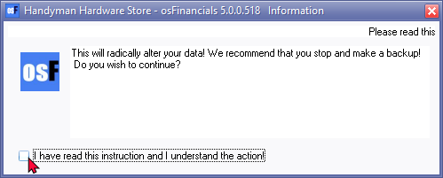
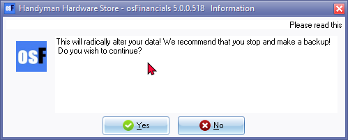
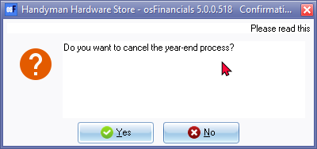
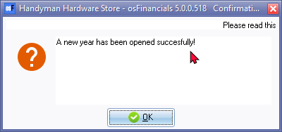
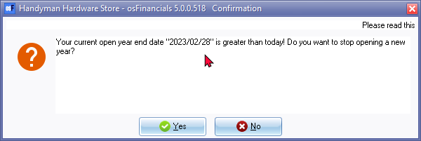

Do year end
|
|
The Log-report in Setup → Access control (Setup ribbon) will list the date and time, as well as which user and on which device, the year-end procedure was performed as OPEN YEAR - Open new year. |

|
|
When opening a Set of Books, and the financial year expired, a warning confirmation message do the year end, will be displayed.  If you wish to continue, click on the Yes button. |

|
|
If you do not wish to do the Year end at this stage, and continue to work in the Set of Books in the previous financial year, this confirmation message will be displayed each time the Set of Books is opened. If you do not wish to receive this message when opening the Set of Books, click on the All button to hide this confirmation message. When you are ready to Do the year-end, go to the Setup ribbon and select Do year end. |
|
|
If you click on the Open button on the Set of Books screen, and the start of the financial year (for the Set of Books) is older than the system date, the similar confirmation message will be displayed. If you click on the Yes button, you may proceed to do the year end. If you click on the No button, you may go to the Do year end menu on the Setup ribbon. |
This option will perform year-end processing for you. It will balance all the income/expense accounts transferring the balance of each account to the retained earnings or retained income account.
|
|
This account will then show your net profit or loss for the year. The balances of the balance sheet accounts are brought forward to the New year. |
The reporting dates are updated to cater for the New Year. Once the year-end procedure is completed, you will be able to post transactions to your new financial year.
|
|
osFinancials stores the transactions and balances for accounts for up to two financial years (This Year and Last Year). You will still be able to view the transactions and reports for the previous closed financial year. |
|
|
Before you may perform this year-end procedure to close off all your accounts for a specific financial year you need to:
|

|
|
It is recommended that you Disable your Screen Saver in the Windows Operating System, before starting this process. This will prevent the Screen Saver being activated while the process is running. |

To do a year end:
- On the Setup ribbon, select Do year end. The following information screen is displayed:

- If you are absolutely sure, tick the "I have read this instruction and understand the action!" field. The Yes and No buttons will be available on this screen.

|
|
If you have not made backups, click on the No button and backup your Set of Books. |
- If you click on the Yes button, a confirmation message is displayed:

- Click on the Yes button, if you are absolutely sure you have made backups.
|
|
This is your last chance to cancel this process. If you want to abort the process, click on the Yes button. |
- Click on the No button to start the process.
|
|
It is recommended that you do not use your system for other tasks while this process is running. |
- Once the process is finished, the confirmation message is displayed:

- Click on the OK button. You may continue to work in the new year.
Post to last year
- It is possible to post transactions in batches (journals) and/or documents (invoices, credit notes, purchases and supplier returns) to the previous financial year. For example, if transactions in a batch includes a date that corresponds to the previous financial year (for instance, if the current financial year spans from 01/03/2022 to 28/02/2023 and the transaction date is 10/03/2021), a confirmation message will appear asking if you want to proceed with posting the batch. The message will state:
"Do you want to continue posting? Batch contains transactions posting to last year!"
- Check that the date is correct - Last year's date.
- Click on the Yes button. osFinancials will post the transaction to the previous (last) financial year.
If the date(s) of the transactions is incorrect:
- Click on the No button.
- Correct the date(s) of the transaction in the batch to this year.
- Balance the batch once again.
- Post the batch.
|
|
It is also a good idea to restrict posting to the previous financial year. You may do this by selecting Setup → Reporting dates (Setup ribbon) and remove the tick in the "Post to last year" field. Although you will not be able to post transactions to that financial year, you may still print reports. You may at any time select this field again should you wish to post to the previous financial year. |
Do a year end in the future
Should you initiate the year end process (Do year end (Setup ribbon)) and the financial year ends in the future, a similar confirmation message to the following, will be displayed:

If you do not wish to proceed at this stage, click Yes.